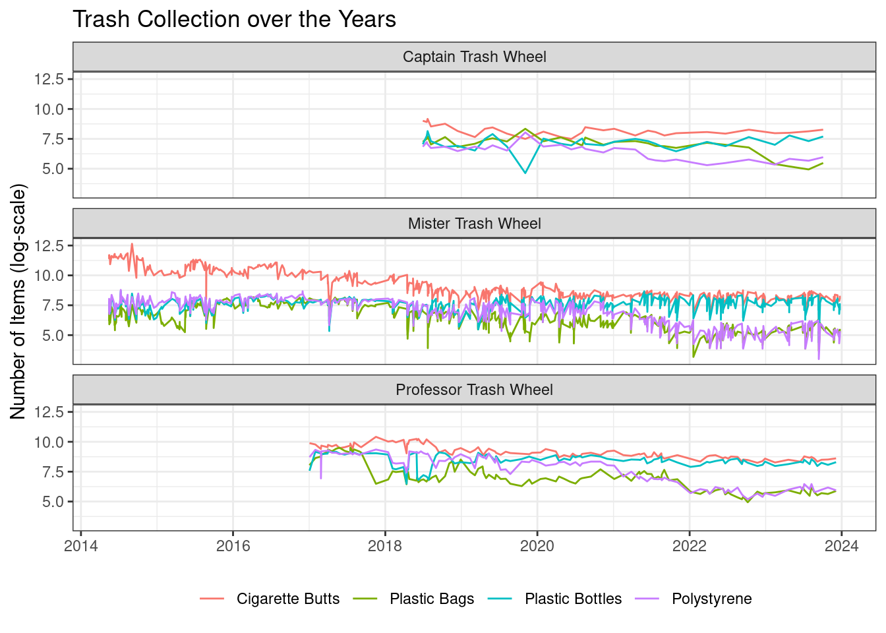

install.packages("taylor")13 Tidy Tuesday Data
The R for Data Science Community releases data that can be used to practice data science skills.
If you do decide to use any of these data set, we kindly ask to fill the R4DS Survey to indicate that the data set are being used in class.
13.1 Taylor Swift Data
The taylor package provides the taylor_all_songs and taylor_album_songs data sets that contain information on all of Taylor Swift’s songs. Each data set contains basic information of songs (song release date, album releaser, …) and Spotify API level data (danceability score, energy score, …). You can install the taylor package with the following code:
Access the data with:
taylor::taylor_album_songs
## OR
library(taylor)
taylor::taylor_album_songsThe help documentation can be found here: https://taylor.wjakethompson.com/
13.1.1 Data
One hundred randomly selected songs are displayed below:
13.2 Anime
The anime data set from MyAnimeList contains information on rankings and popularity scores of different anime episodes. More information can be found here. The data set contains 77,911 observation and 28 variables. Warning: This data set will take over 30 MB to load up in R.
anime <- readr::read_csv("https://raw.githubusercontent.com/rfordatascience/tidytuesday/master/data/2019/2019-04-23/tidy_anime.csv")13.2.1 Data
Here is a sample of the data set, with the synopsis variable removed to display the table better.
13.3 Starbucks
starbucks <- readr::read_csv('https://raw.githubusercontent.com/rfordatascience/tidytuesday/master/data/2021/2021-12-21/starbucks.csv')13.3.1 Data
A random sample of 100 products are shown.
starbucks |>
dplyr::slice_sample(n=100) |>
DT::datatable(options = list(dom = "tp", pageLength = 5))13.4 Mr. Trash Wheel
Mr. Trash Wheel is a machine designed to collect trash in the Baltimore Harbor.
trash <- readr::read_csv('https://raw.githubusercontent.com/rfordatascience/tidytuesday/master/data/2024/2024-03-05/trashwheel.csv')13.4.1 Data
A random sample of the data:
trash |>
dplyr::slice_sample(n=100) |>
DT::datatable(options = list(dom = "tp", pageLength = 5))13.4.2 Sample Plot
13.4.2.1 Cleaning Data
library(tidyverse)
df <- trash |> select(-SportsBalls, -GlassBottles, -Wrappers, -HomesPowered) |>
filter(Name != "Gwynnda Trash Wheel") |> drop_na() |>
mutate(Date = mdy(Date)) |>
pivot_longer(PlasticBottles:PlasticBags, names_to = "Trash", values_to = "Value")13.4.2.2 Plot
Code
df |> ggplot(aes(x = Date, y = log(Value), color = Trash)) +
geom_line() +
facet_wrap(~Name, nrow = 3) +
theme_bw() +
ylab("Number of Items (log-scale)") +
ggtitle("Trash Collection over the Years") +
scale_color_discrete(labels = c("Cigarette Butts", "Plastic Bags", "Plastic Bottles", "Polystyrene")) +
theme(legend.title = element_blank(),
legend.position = "bottom",
axis.title.x = element_blank())